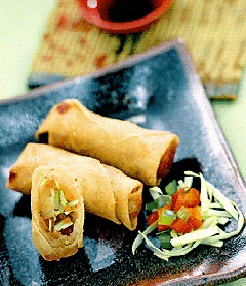
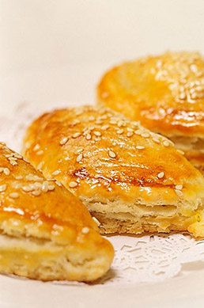

Welcome to the Empire Garden Restaurant!
Menu

Appetizers
- Scallion Pie
- Peking Ravioli
- Egg Rolls
- Fried Chicken Wings
- BBQ Spare Ribs
- Boneless Spare Ribs
- Chicken Fingers
- Teriyaki Steak
- Jumbo Shrimps
- Deep Fried Scallops
- Stuffed Crab Claws
- Crab Rangoon
Dim Sum
- Steamed roast pork bun
- Steamed chicken bun
- Steamed bun w/lotus paste
- Steamed bun w/ glutinous rice
- Steamed bun w/ chinese sausage
- Steamed bun w/ yellow cream
- Chicken Paws
- Meatballs w/ peas
- Braised tripe w/ ginger
- Steamed Pork feast roll
- Various flavored puddings
- Crystal shrimp dumpling
- Steamed shrimp dumpling
- Pork w/ crab meat shao mai
- Crispy spring roll
- Stuffed tofu w/ shrimp
- Stuffed green peppper w/ shrimp
- Stuffed eggplant w/ shrimp
- Pain fried turnip cake
- Deep fried crispy shrimp roll
- Stuffed shrimp w/ black mushroom
- Sweet rice wrapped in lotus leaf

Chicken
- Chicken with Virginia Ham & Broccoli
- Deep fried Chicken
- Poached Chicken garnished w/ Broccoli
- Poached Chicken with Ginger sauce
- Soy sauce Chicken
- Special salted Chicken
- Steamed chicken w/ black mushrooms
- Chicken with straw mushroom and vegetables
- Diced chicken with Cashew nuts
- Chicken w/ vegetables
- Chicken w/ broccoli
- Curry Chicken
Beef
- Steak cubes w/ vegetables
- Grilled Sirloin Steak on bed of broccoli
- Hong Kong Style Beef chunks w/ tomato sauce
- Beef chunks w/ black pepper
- Beef chunks and broccoli
- Beef w/ vegetables
- Shredded beef with preserved vegetables
- Curry Beef
- Spicy Beef
Pork
- Spicy Pork Chop
- Steamed spare ribs w/ black bean sauce
- Stir fried spare ribs w/ black bean sauce and pepper
- Roast pork w/ scrambled eggs
- Rib bellies w/ preserved vegetables
- Meat cake
- Pork w/ broccoli
- Pork w/ vegetables
- Lobster sauce

Seafood
- Steamed live fish
- Lobster
- Filet of sole w/ vegetables
- Filet of fish w/ vegetables
- Crabs w/ ginger and scallions
- Crab meat and straw mushrooms
- Jumbo shrimp w/ vegetables
- Pain fried shrimp
- Stir fried shrimp
- Shrimp w/ cashew nuts
- Shrimp w/ vermicelli
- Shrimp w/ scrambled eggs
- Spicy shrimp
- Spicy Squid
- Spicy Scallops
- Squid Special
- Fresh squish w/ vegetables
- Clams w/ black bean sauce
- Sea conch w/ black bean sauce
- Scallops w/ vegetables
- Abalone
- Shrimp lobster sauce
If you have any questions about our dishes, please feel free to call!
690 Washington Street, Boston MA 02111
Tel: (617) 482-8898 - Fax: (617) 482-6500
Tel: (617) 482-8898 - Fax: (617) 482-6500